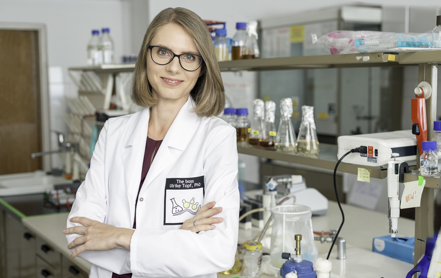

Ulrike Topf
Group Leader
utopf@ibb.waw.pl
I studied biological sciences at the University of Frankfurt am Main, Germany, and later specialised in genetics and molecular biology while completing my studies at the University of Freiburg im Breisgau. I dedicated my Master's and PhD research to studies using the small nematode C. elegans. For my postdoctoral research, I decided to focus on protein biochemistry using the budding yeast S. cerevisiae. These studies sparked my interest in the complex interplay between the translation, maturation, and degradation of proteins. Since October 2018, I have been an independent group leader at the Institute of Biochemistry and Biophysics in Warsaw. My team conducts fundamental research in the field of proteostasis, combining studies in yeast and C. elegans.
Education
- 2021
- DSc, Biological Sciences, Institute of Biochemistry and Biophysics, Warsaw, Poland
- 2011
- PhD, Cell Biology, Friedrich Miescher Institute of Biomedical Sciences, Basel, Switzerland
- 2006
- Dipl. Biologe, Molecular Biology and Genetics, Albert Ludwigs University, Freiburg i. B., Germany
- 2003
- "Vordiplom", Biology, Johann-Wolfgang-Goethe University, Frankfurt a.M., Germany
Awards & Membership
- Since 2026
- Research Foundation Flanders - Bio1 Fellowship panel member on Molecular and Cellular Biology
- Since 2025
- Co-representative Poland in the Finance and Policy Committee (FINPOL) to the International Conference of Yeast Genetics and Molecular Biology
- 2021-2025
- Member of Managing Committee of COST Action CA20113 “ProteoCure” (Representative of Poland)
- 2019
- Habilitation fellowship of L’Oréal Poland for Women in Science
- 2016-2019
- Fellowship for Outstanding Young Scientists from the Ministry of Science and Higher Education, Poland
- 2013-2015
- Swiss National Science fellowship for “Advanced researchers”
- 2012-2013
- Swiss National Science fellowship for “Prospective researchers”